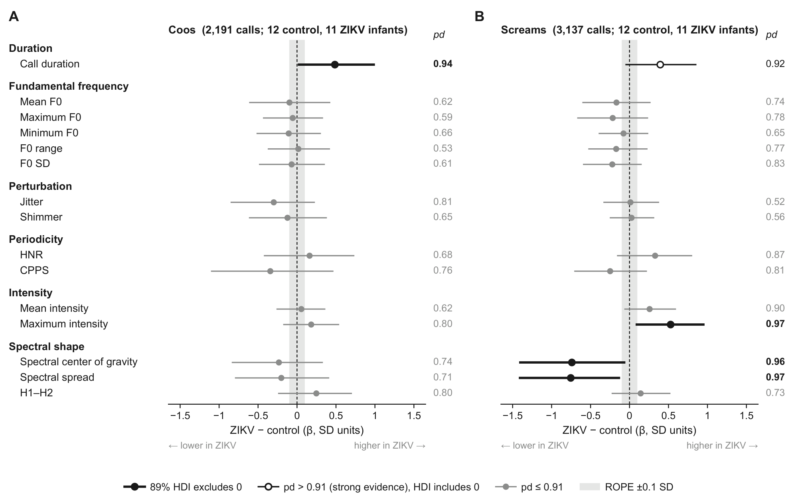
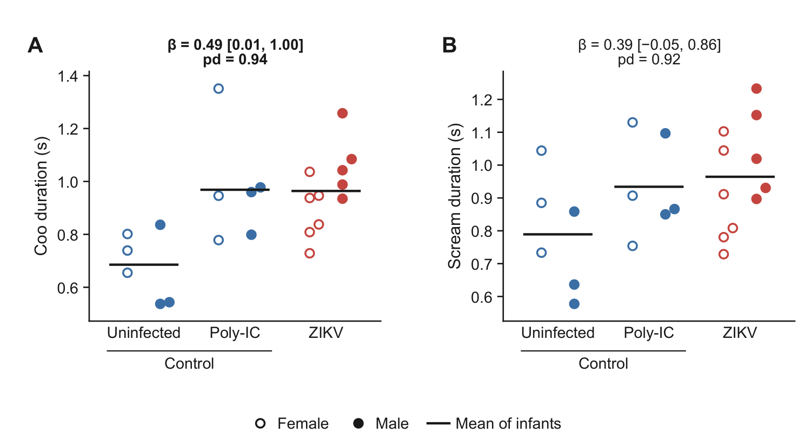

A cry is a measurement
Doctors have long listened to how newborns cry. A cry comes from an old network in the brainstem that coordinates breathing, the larynx and the mouth, under the influence of the brain's emotional centers. When the nervous system is injured, the cry often changes. That makes it something rare in neuroscience: a signal from deep in the brain that you can record without touching anyone.
Our lab studies postnatal Zika virus infection, using infant rhesus macaque models. In this study, 12 infants were infected at about five weeks of age and compared with 12 matched controls. At seven to eight months, each infant took a ten-minute test in which it could see the person who had raised it but could not reach them. Infants call a great deal in that situation.
We already knew that the infected infants were just as attached to their caregivers as the controls, and that their distress at the separation was blunted. So the question was simple to ask. Did they also sound different?
Two ways a call can change
There are two broad reasons a call might change after an early injury to the brain, and they predict different things.
- The feeling behind the call could change. Across mammals, calls given in high arousal tend to be louder, longer and higher-pitched, with their energy shifted toward higher frequencies. A less distressed infant should call lower, more quietly and less persistently.
- The machinery could change. If the infection had damaged fine control of the voice, the vocal folds should vibrate less steadily. That shows up as roughness: more jitter and shimmer, and less clean harmonic structure.
I set up the analysis so the data could favor either account, or neither.
Measuring 5,328 calls
Two trained observers, who did not know which animals were infected, marked the start, the end and the type of every call on spectrograms. Two experienced observers, also blind to infection, then checked every mark. That came to 10,118 calls. I analyzed the acoustics of the two most common types. Coos are tonal contact calls. Screams are loud, noisy calls given in distress. Together they came to 5,328 calls.
For each call I extracted 15 acoustic features with Praat, through its Python interface Parselmouth: duration, pitch, roughness (jitter and shimmer), periodicity, loudness, and the shape of the spectrum, meaning where in frequency the call's energy sits and how widely it is spread.
Deciding what counts as a pause
Timing was harder, because it needed definitions before it could be measured. Infants often give several calls with no gap between them. The observers drew one box per call, and 30% of the gaps between consecutive boxes were zero or slightly negative, where two boxes touched or overlapped. Treated naively, those gaps would swamp any measure of how long an infant pauses.
So I let the data set the first cutoff. On a logarithmic scale, the gaps between calls fall into two humps: one around two hundredths of a second, and one around 0.84 seconds. A mixture of two bell curves fitted to them crosses at 0.07 seconds.

That gave three units. Calls 0.07 seconds apart or less are back to back, and a run of them is one vocal event (4,710 in all). A pause is the silence between one vocal event and the next. A bout is a run of vocal events with pauses of three seconds or less (626 in all). The three-second line is a convention: the data show no natural break there, so I later moved it to see what depended on it.

© Emory National Biomedical Research Center, Emory University. All rights reserved.
Each measure got its own Bayesian hierarchical model (PyMC, through Bambi), with a term for each infant so that an animal that called 280 times is not mistaken for 280 independent animals. Fifteen features in each of two call types, plus six timing measures, made 36 models.
What changed
The screams changed, and in a specific way. Infected infants concentrated the energy of their screams at lower frequencies and in a narrower band. The center of gravity of the spectrum was lower by about 300 Hz, and its spread was narrower by about 240 Hz. In the average spectrum, the two groups match up to about 4 kHz. Above that, the screams of infected infants carry a smaller share of their energy.

© Emory National Biomedical Research Center, Emory University. All rights reserved.
Pitch did not change. Neither did any measure of how steadily the vocal folds vibrate. In coos, nothing moved except duration.

The rhythm changed too. In controls, 53% of calls followed the previous call back to back. In infected infants, 38% did, which is about half the odds. All of that difference came from males. Infected males began about as many vocal events as control males, but they did not keep them going, and every infected male called back to back less often than every control male (11–36% of consecutive calls, against 38–81%). In females the two ranges overlapped almost completely.

Then I tried to break it
Thirty-six models are thirty-six chances to be fooled. By my own threshold, about four of them should clear the bar by chance even if the virus did nothing at all. Six did. So the count alone settles very little. What matters is which effects are still standing after you try to knock them down.
I tried five ways:
- Adjust for sex, and estimate each effect separately in males and in females.
- Split the controls. Half of them had received a synthetic immune stimulant (Poly-IC), which sets off the body's reaction to a virus without the virus. An effect those controls share is about immune activation, not about Zika.
- Split the infected animals by recording date. They were recorded in two cohorts, 15 months apart. A real effect should appear in both.
- Leave out one infant at a time and refit, to check that no single animal carries the result.
- Change the definitions: move the back-to-back cutoff to 0 and to 0.15 seconds, move the bout cutoff to 1.5 and to 5 seconds, and measure gaps between single calls instead of between vocal events.
Some results did not survive. Infected infants gave longer coos, but only the males did, and the immune-stimulant controls gave coos just as long, so the virus is probably not the cause. Longer screams followed the same pattern, more weakly.

Infected infants also paused about one and a half times as long between vocal events. But they paused longer only than the immune-stimulant controls, not than the untreated ones, and the estimate shrank when I shortened the bout cutoff. Peak loudness was slightly higher, by about half a decibel on microphones that were never calibrated, in a cage where the infants moved freely. Moving 6% closer to the microphone would do the same, and I do not read anything into it.
One pattern I report only as a description. Infected infants broke their calling into more bouts (a median of 22 per infant, against 13), and nearly half of those bouts were a single vocal event with silence on both sides (48%, against 18%). The models of bout size pointed the same way but were too uncertain, and they did not hold when single infants were left out.
Two results survived. The narrower spread of the scream spectrum stayed credible in all 23 leave-one-out refits. Its companion, the lower center of gravity, kept its direction in every refit but stayed credible in only 14, so I hold it more loosely. The drop in back-to-back calling stayed credible in all 24 refits, was about the same size in both cohorts and against either control group, and came entirely from the males.
Survived does not mean certain. When 23 infants are split into cohorts, sexes or control subgroups, the spectral estimates keep their direction but often lose their certainty, which is what five or six animals per group will do.
A result you have not tried to break is one you have not really looked at.
What it means, as far as I can tell
The pattern fits the first account better than the second, but neither completely. Lower, narrower screams and, in males, less sustained calling are what reduced arousal should sound like, and they match the infants' blunted distress. But pitch, the most reliable acoustic sign of arousal in these monkeys, did not move. And the voice itself was steady, which argues against a simple motor problem, although a smaller mouth opening or poorer coordination of breathing and voice could still play a part.
The honest summary is that the calls changed in spectral shape and in timing, and the data cannot yet say why. The limits are real: small groups, one recording per infant, audio from camera microphones, and infection group tangled up with recording date. The two-cohort check helps with the last of these. It does not remove it.
Teaching a machine to listen
Marking 10,118 calls by hand took four people. To make the next study possible, I built a detector.
- Input. Audio at 24 kHz becomes a 128-band log-mel spectrogram in 10 ms frames. Each band is measured relative to that recording's own noise floor, which cancels differences in gain and in microphone response, the main differences between cameras.
- Model. A convolutional network followed by a two-layer bidirectional GRU, written in PyTorch. It labels every frame (background, scream, coo, threat bark or affiliative call) and separately predicts where calls begin and end, so that calls given back to back are split and not merged.
- Training. Recordings are made artificially quieter and noisier, and rare call types are sampled more often than they occur.
- Testing. Four-fold cross-validation that holds out whole animals. Each model trains on 18 animals and is scored on 6 it has never heard, balanced across recording sessions. I report precision and recall for each call type and each recording, with a confusion matrix that separates wrong labels from missed calls and false alarms.
- Use. The four models are averaged, and the output is a table that opens in Raven, the software the lab already uses, right beside the human annotations. Low-confidence detections can be reviewed first.
The hard part has been a change of microphones. A newer set of recordings was made with different cameras, and they sound different. For those I hold out entire recording dates during testing, and I am comparing training tricks such as simulating a muffled microphone. Scores will go here once the evaluation is written up.
Status. Presented as a poster at SimCo 2026. A manuscript is in preparation; the figures and numbers on this page follow its current draft and may change before it is submitted.
With Kaitlyn Love, Alex van Schoor, Noah Larco, Cynthia Guo, Rebecca Richardson, Mehul Suthar, Ann Chahroudi and Jessica Raper (principal investigator), at the Emory National Biomedical Research Center. Funded by the National Institute of Neurological Disorders and Stroke (R01 NS120182) and the NIH Office of the Director (P51 OD011132).
The brain and behavior findings in the same animals: Zika and the developing brain, and Desai et al. (2026), preprint on bioRxiv.